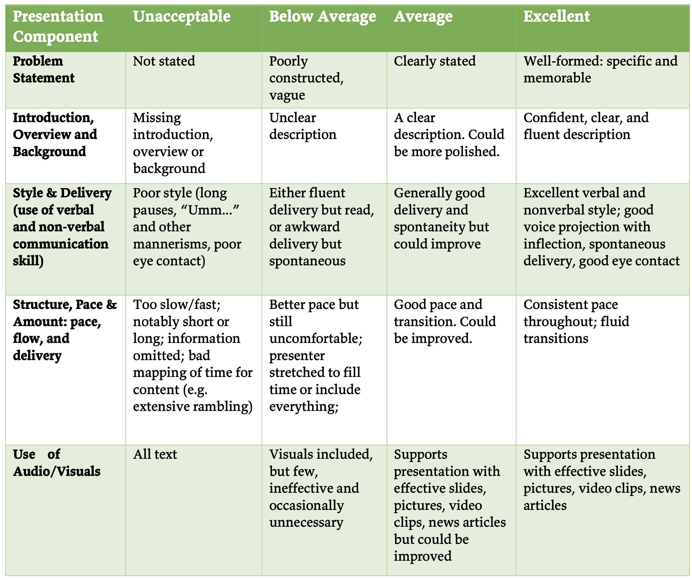
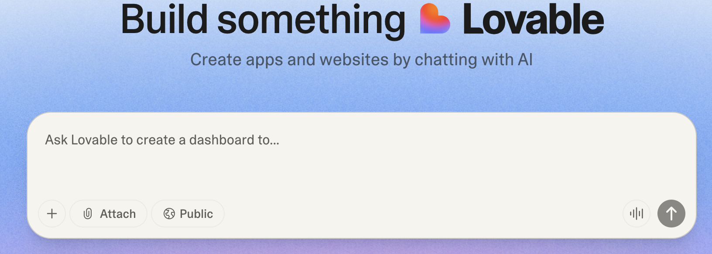

Next todos — 10/30
- Proposal submission
- Proposal presentation
No class on Thursday (10/30)
- You will upload links for video and slides
- You can use this class time to record a video
- You can also record a Zoom session
Presentation Rubric
(Files –> Final Project)

Todo: Complete the slides
- What are the major presentation components?
- Follow the presentation rubric
- Create the slides
- Draft the script: what will you say for different slides?
- Note the time limit (3-minute presentation)
How can generative AI
help with your slides?
Todo: Complete the
proposal submission
Check syllabus for details
Lovable for your final project?

Todo
- Explore Lovable
- Can it implement one of the features from your final project?
- What’s the prompt you are using?